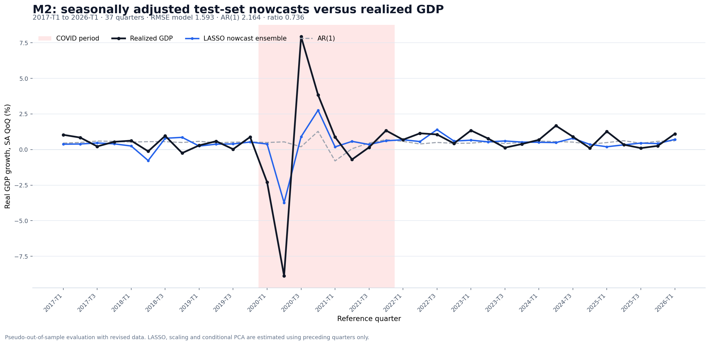
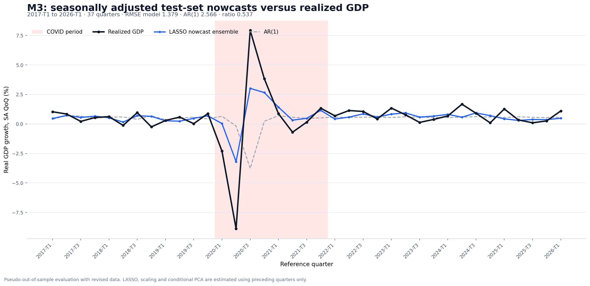
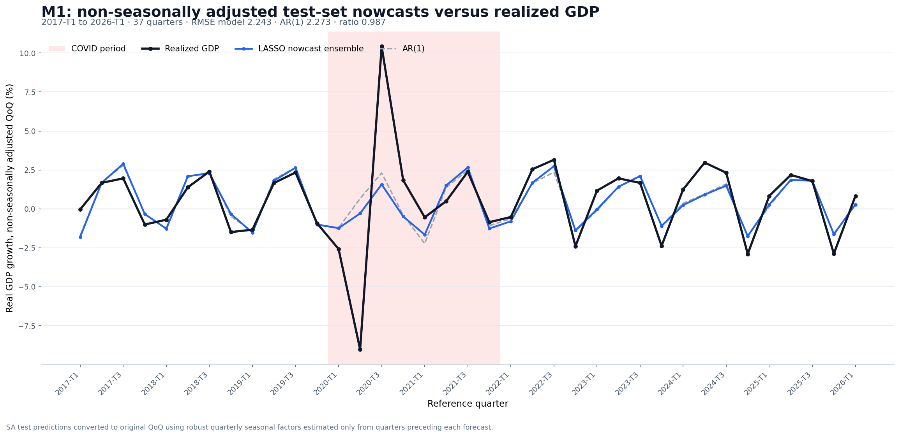
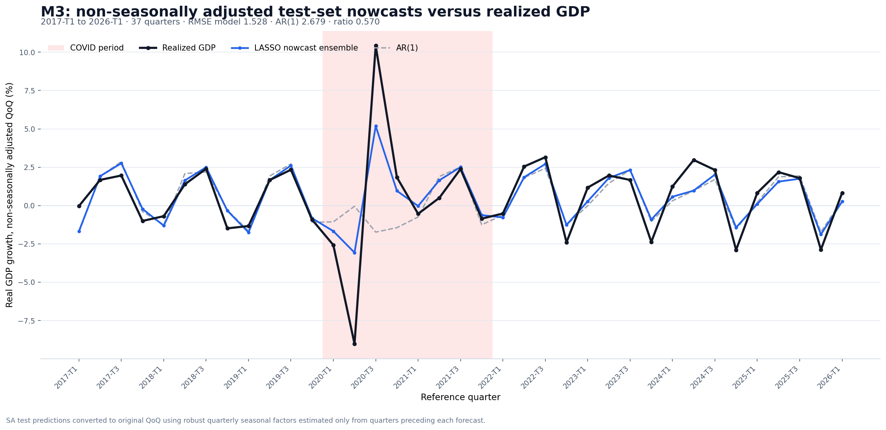

Test-set predictions versus realized GDP
Separate M1, M2 and M3 graphs in both seasonally adjusted and original terms.
Seasonally adjusted QoQ
The model target: seasonally adjusted quarter-on-quarter real GDP growth.
M1
RMSE model 2.129; AR(1) 2.164; ratio 0.983.
M2
RMSE model 1.593; AR(1) 2.164; ratio 0.736.

M3
RMSE model 1.379; AR(1) 2.566; ratio 0.537.

Non-seasonally adjusted QoQ
The same predictions converted to original data using seasonal factors estimated only from preceding quarters.
M1
RMSE model 2.243; AR(1) 2.273; ratio 0.987.

M2
RMSE model 1.729; AR(1) 2.273; ratio 0.760.
M3
RMSE model 1.528; AR(1) 2.679; ratio 0.570.
